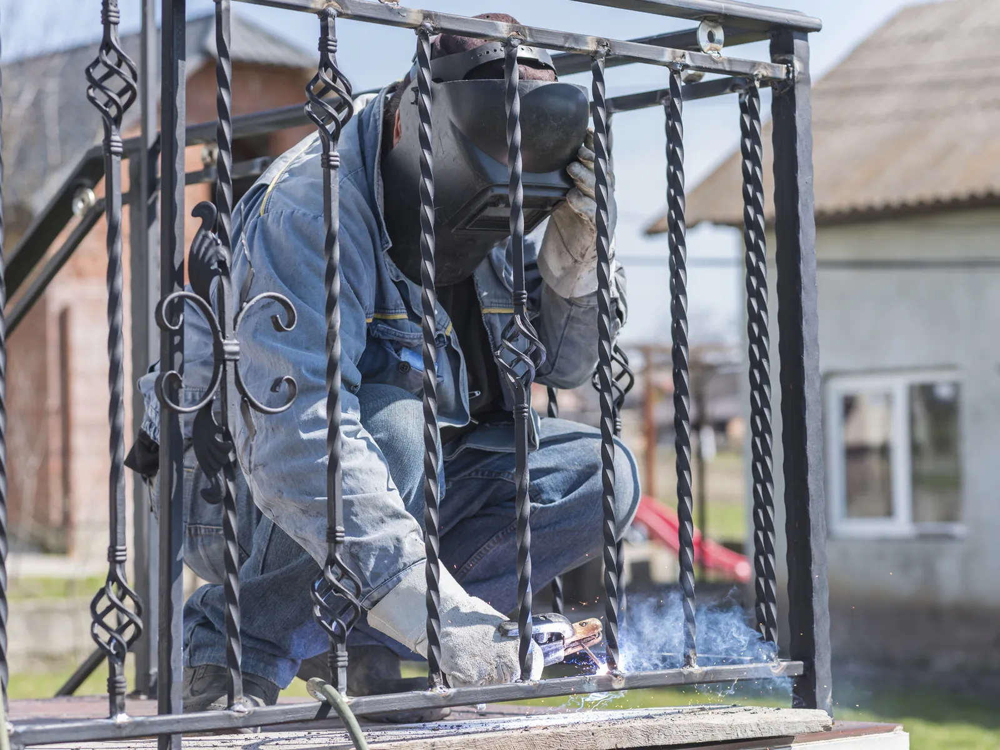

Home · Mobile Welding · Iron Railing Welding
Iron Railing Welding in New Orleans
At Big Easy Mobile Welders, we weld, repair and build iron railings for homes and businesses across New Orleans, indoors and out. Our licensed, insured welders bring a fully equipped mobile unit, so most repairs happen right where the railing stands.

We come to the jobWhat Do You Get With Iron Railing Welding in New Orleans?
Our iron railing welding service in New Orleans covers a free look at the railing and a no-obligation quote, repairs or new custom work, indoor and outdoor jobs, clean prep before every weld, a licensed and insured welder on site, and a walkthrough of the finished rail before we pack up.
A Free Look at the Railing
We look at the railing, how it is mounted and what it needs, then quote the job with no hidden fees.
Repairs and New Railings
A cracked joint, a loose baluster or a full run of new railing all fall under the same service. You tell us what you want, and we scope it with you.
Indoor and Outdoor Work
We handle interior staircases as readily as front steps, porches, decks and balconies.
Built to Your Property
New railings are made to the exact measurements and style of your stairs or balcony. Nothing comes off a stock rack and gets forced to fit.
Clean Prep Before Welding
We take rust, flaking paint and dirt off the joint with brushes and grinders. A weld laid on clean iron fuses properly instead of sitting on top of the scale.
Licensed Welders and a Walkthrough
A licensed, insured and highly trained welder does the work, then shows you the finished joints and how the rail now holds.

What Types of Iron Railings Do We Weld in New Orleans?
We weld four main types of iron railing in New Orleans: ornamental railings with scrolls, twists and finials, picket railings with upright bars between rails, glass railings held in welded iron frames, and handrails and balustrades on stairs and walkways. Each type uses welding differently, from decorative joints to structural support.
Ornamental Iron Railings
These carry the detail: leaves, scrolls, finials, spirals and twisted balusters. They suit outdoor balconies and indoor staircases alike, at homes and businesses.
Picket Railings
Upright pickets run between a top rail and a bottom or middle rail, with even spaces between them. The look is plain and tidy, and it works on country homes and city houses.
Glass Railings With Iron Frames
Glass panels sit inside welded iron frames that carry the load. The iron gives the structure, and the glass keeps the view open from a balcony or garden.
Handrails and Balustrades
Handrails give people something to hold on stairs and long walkways. Balustrade caps can add a curved or shaped top for extra detail.
Why Do Iron Railings Need Welding Repairs in the Humid New Orleans Climate?
Iron railings in New Orleans need welding repairs because humid air and frequent rain rust bare iron quickly, and water settles where posts meet steps and slabs. Rust often eats into welds and mounting points first, so a rail can loosen or crack at the base long before the bars themselves look damaged.

Most railing failures here start at the bottom, where water sits and paint wears thin.
Rain pools around posts, brackets and the lowest rail, and the moisture finds every chip in the paint. Rust spots usually show first on the underside, so that is where we look before we quote.
After a repair, the joint needs primer and paint to hold up in this air. Our guide on protecting welded metal from rust and corrosion explains the coating choices.
What Are the Benefits of Welded Iron Railings for New Orleans Homes?
Welded iron railings give New Orleans homes a look that lasts, safer stairs, decks and balconies, and a design that can match any style. Iron does not warp the way wood can, and a well-welded rail stays rigid where people lean, climb and hold on every day.

Timeless Looks
From a sweeping staircase to a simple balcony rail, welded iron adds a kind of charm few other materials match. Kept painted, the look holds for many years.
Safety on Stairs and Balconies
Outdoor railings are fixed with brackets reinforced by welding, which keeps them steady on stairways, decks and balconies. A solid rail gives everyone a safe edge.
Any Style, and Room to Change
Iron can follow ornate Victorian lines or a sleek modern profile. Because it can be cut and rewelded, a railing can also be altered later if your taste changes.
What Are the Steps in Our Iron Railing Welding Service in New Orleans?
Our iron railing welding service in New Orleans starts with your free quote request and a visit set at a convenient time. Our welders then bring the mobile unit to repair or install the railing on site, and we finish with a walkthrough of the rail, easy payment options and follow-up support.
Tell Us About the Railing
Phone us or fill in our online estimate form with where the railing is and what is wrong or wanted.
Pick a Time
Once the quote is approved, we pick a time that works for you.
We Weld It in Place
Our welders arrive with the tools, prep the iron and weld the repair or the new sections in place.
Walkthrough and Support
We show you the finished railing, offer easy payment options and provide follow-up support if anything needs attention.
 The rig comes to you
The rig comes to you
How Much Does Iron Railing Welding Cost in New Orleans?
Iron railing welding prices in New Orleans come down to the number and size of the pieces to weld, how complex the design is, any special requirements of the job and whether it is a repair or a new railing. We price every railing after seeing it in person, and the estimate is free with no hidden fees.
Number and Size of Pieces
One broken baluster is a quick fix, while a long run of rail takes more material and time.
Design Complexity
Scrolls, twists and ornamental joints take more welding and finishing than straight pickets.
Special Requirements
Upper balconies, interior stairs and glass panel frames each add their own setup and care.
Repair or New Railing
Fixing an existing rail and building a custom one from measurements are priced differently.
What Should You Check Before Booking Iron Railing Welding in New Orleans?
Before iron railing welding starts in New Orleans, know where the railing is and what it is fixed to, what style you want if it is new, and what caused the damage if it is a repair. Clear answers help us quote accurately and bring the right equipment the first time.
Where It Is and How It Is Mounted
Tell us whether the rail sits on concrete steps, a wood deck, a balcony or an interior stair. The mounting decides how the repair is made.
Photos or a Style You Like
A photo of the damage, or a picture of a railing style you like, lets us plan the work and price it properly.
What Caused the Damage
A rail bent by a storm or a falling limb needs different work than one rusted loose at the base. Our guide to welding fixes for storm-bent railings, gates and fences covers the common fixes.
How Do Customers Rate the Welders Behind Our Iron Railing Work in New Orleans?
Reviews from homes and businesses that hired our mobile welders keep returning to top-notch workmanship and professional service. The licensed, insured New Orleans team behind them repairs and builds iron railings on site, from staircases and decks to balconies, and customers note the fair prices and quick turnarounds too.
Big Easy Mobile Welders provide quality welding work at a reasonable price. They have been reliable and quick to respond whenever I've needed them, which has made it easy for me as their customer!
The guys from Big Easy Mobile Welders were great! They came to my house and welded two iron railings with a quick turnaround time, which was just what I needed. The quality of workmanship is top notch which made me a satisfied customer! If you need anything welded then these guys will be able to help out big time.
I can't recommend Big Easy Mobile Welders enough! They helped me out of a jam by welding our gate, and their work is amazing. The fast service combined with great quality made all the difference in getting things done quickly without any hassle for me. Thanks again, guys!
If you need a welder for any type of job, I highly recommend Big Easy Mobile Welders. The team did an amazing job on my home and business! They were professional from start to finish. Thankful that their work could help me get back up and running again sooner than expected.
I had the pleasure of working with Big Easy Mobile Welders this past week. They are not only professional and skilled, but also very affordable! I highly recommend them for any welding job you may need done on your property or vehicle. You won't regret using these guys as they do amazing work at a fair price 10/10 would do again!
Which Other Mobile Welding Services Go With Iron Railing Welding in New Orleans?
Many iron railing welding jobs in New Orleans sit next to other metalwork we handle: gate and fence welding, metal window frame repairs, pipe welding, specialized repairs at your home or office, and custom welding. Our licensed, insured welders take on each of them on site, so one visit can cover more than the railing.

Gate Welding
Gate repairs and custom gates in steel or aluminum, with materials and tools covered in your estimate.
View gate welding →
Fence Welding
Fence repairs and custom fence fabrication, with the material and process chosen for your fence.
View fence welding →
Window Welding
Repairs for rusted and worn metal window frames, carried out at your home.
View window welding →
Pipe Welding
Pipe and pipeline repair on site, with stick and gas-shielded processes matched to the pipe.
View pipe welding →
Specialized Mobile Welding
Repair work at your home or office and custom metal pieces, whatever the size of the project.
View specialized welding →
Custom Welding
Custom ironwork, estimated before we start so we arrive with the right equipment for the job.
View custom welding →
How Do You Request a Free Iron Railing Welding Estimate in New Orleans?
Our online estimate form and a call to (504) 370-2757 are the two ways to request a free iron railing welding estimate in New Orleans. Tell us where the railing is, how long it runs and what it needs, and we will send a no-obligation quote with transparent pricing and no hidden fees.
Loading the estimate form...
If it does not appear, call us at (504) 370-2757.

What Are Common Questions About Iron Railing Welding in New Orleans?
Iron railing questions from New Orleans property owners usually cover whether wrought iron can be welded, how to fix a loose rail or a post set in concrete, how to deal with rust, how a stair railing is made from iron pipe, what drives railing cost and where to find a railing built locally.
Can you weld wrought iron?
Usually, yes, because most modern railings sold as wrought iron are actually mild steel, which welds easily. True wrought iron can also be welded, but its slag fibers call for low heat and shallow penetration. Either way, the welder cleans the joint to bare metal first, since old paint and rust weaken the weld and give off fumes.
How do you tighten a loose metal railing?
First find where it moves. A loose railing is usually caused by a cracked weld, a rusted bracket or an anchor working free at the base. Snugging the bolts can help for a while, but a broken weld or a rusted mount needs to be cut clean and rewelded or replaced to stay tight.
How do you fix a metal railing in concrete?
When a post rusts at the point where it enters concrete, the damaged section is usually cut out and a new piece welded in. The post is then reset in the concrete or fixed with a base plate and anchors, and the joint is sealed and painted so water cannot collect there again.
How do you remove rust from a metal railing?
Light surface rust comes off with a wire brush, sandpaper or a grinder with a wire wheel, down to clean bare metal. Deep rust that has thinned a picket or a rail usually means that section should be cut out and replaced. Prime the bare metal soon, before new rust can start.
How do you make stair railing out of iron pipe?
A pipe stair railing starts with measuring the run and the angle of the stairs, then cutting the pipe to length. The posts are anchored to the steps, the handrail and any middle rails are fitted to them, and the joints are welded or joined with fittings. Primer and exterior metal paint finish the job.
How do you replace a metal porch railing?
The old railing is unbolted or cut free at its mounts, and the new one is measured to the porch, then welded together as sections. It is then fixed to the floor or steps and to the house with brackets or base plates. Every new weld is cleaned and painted once it is in place.
How much does metal deck railing cost?
Metal deck railing cost depends on the total length, the material, the design and how the posts attach to the deck. A plain picket run costs less to build than an ornamental design, and repairs usually cost less than new railing. We price each job after we see it, with no hidden fees.
Where can I find metal deck railing locally?
Home centers stock a few standard kits, but a welder can build a railing to the exact size and style of your deck. In the New Orleans area, our team builds custom iron railings for homes and businesses, so the rail fits your deck instead of the other way around.


Book Your Free Mobile Welding Estimate
Tell us what needs welding, and we will bring the rig to your door anywhere in the New Orleans area.